초음파비파괴검사산업기사(구) (2006-08-06 기출문제)
1과목: 초음파탐상시험원리
1. 주사방법 중 탐촉자의 입사점을 중심으로 탐촉자를 회전하여 초음파 빔의 입사방향을 변화시키는 방법은?
- 전후 주사
- 좌우 주사
- 목돌림 주사
- 진자 주사
(정답률: 알수없음)

2. 초음파가 최대강도를 갖기 위해서는 다음 중 어떤 상태 이어야 하는가?
- 전기신호의 주파수가 진동자 주파수보다 클 때
- 전기신호의 주파수와 진동자 주파수가 동일할 때
- 전기신호의 주파수가 진동자 주파수보다 작을 때
- 전기신호의 주파수와 진동자 주파수가 역비례할 때
(정답률: 알수없음)
3. 근거리음장 내에서 초음파 탐상시험을 수행할 때 주의해야 할 사항으로 틀린 것은?
- 허용된 크기의 불연속이 CRT상에 불합격이 될 크기의 시그널이 될 수 있으므로 주의하여야 한다.
- 불합격이 될 불연속으로부터의 시그널이 허용될 크기의 시그널로 나타날 수 있으므로 주의하여야 한다.
- 불연속으로부터의 시그널이 완전히 소실될 수 있으므로 주의하여야 한다.
- 하나의 불연속이 한 개의 지시만을 나타낼 수 있으므로 결함의 정량적 평가가 가능함에 유의하여야 한다.
(정답률: 알수없음)
4. 초음파 탐상기 CRT상에 나타난 지시를 이동시켜 송신펄스가 CRT화면 원점과 동일지점에 오도록 조절하는 것을 무엇이라 하는가?
- 리젝션(rejection)
- 스위프 지연(sweep delay)
- 필터(filter)
- 스위프 길이(sweep length)
(정답률: 알수없음)
5. 황동의 음향 임피던스(g/Cm2ㆍs)는? (단, 황동 중 종파속도 4.43×10-5cm/s, 밀도는 8.42g/Cm3이다 )
- 0.5×105
- 9.4×105
- 19×105
- 37×105
(정답률: 알수없음)
6. STB-A1 시험편으로 성능검사가 가능하지 않는 것은?
- 분해능의 측정
- 측정범위의 조정
- 경사각탐상의 굴절각 측정
- 사용주파수 측정
(정답률: 알수없음)
7. 다음 중 수정진동자의 빔 분산각을 구하는 공식은? (단, D:진동자 직경, λ:파장, F:주파수, θ:빔 분산각)
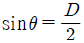
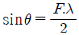
- sinθ=F.λ
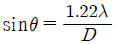
(정답률: 알수없음)
8. 직경 2㎜인 편저공에서 얻은 에코높이를 CRT 스크린 높이의 100%에 맞추어 놓고 동일 조건에서 직경 1㎜인 평저공에서 에코를 얻는다면, 그 높이는 스크린 높이의 몇%가 되는가?
- 약100%
- 약75%
- 약50%
- 약25%
(정답률: 알수없음)
9. 다른 비파괴검사법에 비교하여 초음파탐상시험의 장점을 설명한 것 중 틀린 것은?
- 다른 시험방법에 비해 투과능력이 좋아 두꺼운 시험체의 탐상이 가능하다.
- 작은 내부결함에 대하여 높은 감도를 얻을 수 있다.
- 표면직하 얇은 강판에 존재하는 결함의 검출에 가장 적합하다.
- 한면만이라도 접근할 수 있으면 검사가 가능하다.
(정답률: 알수없음)
10. 그림은 자기이력곡선 그래프이다. H는 무엇을 나타내는가?
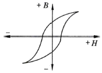
- 자속밀도
- 보자력
- 척력
- 자화력(자계의 세기)
(정답률: 알수없음)
11. 음파의 세기 감소에 결정적으로 영향을 미치는 인자들만으로 조합된 것은?
- 산란, 흡수, 분산
- 굴절, 흡수, 회절
- 굴절, 반사, 산란
- 흡수, 굴절, 반사
(정답률: 알수없음)
12. 초음파 탐상시험(UT)과 음향방출시험(AE)에 관한 다음 사항 중 초음파 탐상시험에 해당되는 것은?
- 시험체 결정입자의 영향을 크게 받는다.
- 운전 중 감시와 균열 발생 진행에 응용된다.
- 탐촉자는 시험체에서 탄성파 방출시에만 수신한다.
- 외적으로 하중을 부과해야 결함 검출이 가능하다.
(정답률: 알수없음)
13. 와전류탐상시험이 특징에 대한 설명이다. 옳은 것은?
- 시험결과의 기록이나 보존이 용이하지 않으나 복잡한 형상의 시험체 전면 담상에 대해서는 효율이 좋다.
- 지시에 영향을 주는 인자가 많아 탐상이나 재질, 크기 등의 시험에 적용 가능하나 결함 이외 잡음인자의 판별이나 억제 작업 등이 필요하다.
- 시험 코일의 비접촉 사용이나 전기신호의 결과가 얻어지는 자동화가 가능하기 때문에 자성, 비자성의 유리관, 환봉, 선 등의 내부결함 검출에 대해 적합한 시험이다.
- 시험 코일의 가열이나 대형화 등에 의해 고온에는 탐상, 굵은 선, 두께의 큰관, 탄소강 내면 등 다른 시험방법이 적용하기 어려운 대상에 적합한 시험이다.
(정답률: 알수없음)
14. 초음파 탐상시험시 그 결과에 대한 표시방법 중 초음파의 진행시간과 반사량을 화면의 가로와 세로축에 표시하는 탐상방법은?
- A-스코프
- B-스코프
- C-스코프
- D-스코프
(정답률: 알수없음)
15. 다음 접촉매질 중 일반적으로 전달 효율이 가장 좋은 것은?
- 물
- 기계유
- 물유리
- 75% 글리세린
(정답률: 알수없음)
16. 다음 중 초음파 탐상시험에서 탐촉자의 주파수를 높이면 저하되는 것은?
- 분해능
- 감도
- 침투력
- 감쇠
(정답률: 알수없음)
17. 공진법에서 다음 중 기본 공진이 일어나는 시험체 두께는?
- 송신 초음파 파장의 1/2일 때
- 송신 초음파 파장과 같을 때
- 송신 초음파 파장의 1/4일 때
- 송신 초음파 파장의 2배일 때
(정답률: 알수없음)
18. 표준시험편을 이용하여 CRT의 횡축을 측정거리 100㎜로 조정 후, 수직법으로 탐상하여 4번째의 저면 반사파의 100㎜ 위치의 눈금과 일치하였다면 시험체의 두께는?
- 20㎜
- 25㎜
- 200㎜
- 400㎜
(정답률: 알수없음)
19. 접촉법에서 검사체 내부로 횡파가 전파되게 하려면?
- 접촉 매질을 적용 후 Y-cut 수정진동자를 검사체에 적용
- 접촉 매질을 적용 후 시험체의 양면에 2개의 탐촉자를 적용
- 접촉 매질을 적용 후 구형 집속 렌즈를 탐촉자에 부착하여 검사체에 적용
- 접촉 매질을 적용 후 X-cut 수정진동자를 검사체에 적용
(정답률: 알수없음)
20. 다음 중 침투탐상시험으로 쉽게 검출할 수 있는 결함은?
- 표면의 피로균열
- 내부기공
- 블로 홀
- 슬래그 혼입
(정답률: 알수없음)
2과목: 초음파탐상검사
21. 접촉에 의한 초음파 탐상검사에서 다음 그림과 같이 주사 하는 것을 무엇이라 하는가?
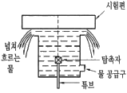
- 버블러 스캐닝
- 갭 스캐닝
- 공기 갭 스캐닝
- 오일 갭 스캐닝
(정답률: 알수없음)
22. 그림의 탐상도형에 대응하는 CRT 표현 결과로 맞는 것은? (단, 측정범위는 모두 동일하다.)
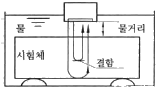
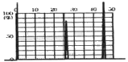
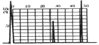
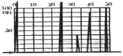
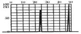
(정답률: 알수없음)
23. 점집속에 사용되는 음향접속 방법이 아닌 것은?
- 구면진동자식
- 렌즈식
- 평면진동자식
- 반사식
(정답률: 알수없음)
24. 모재 두께 20㎜인 용접부를 45℃ 경사각 탐촉자를 이용하여 탐상했을 때 초음파 빔 거리 50㎜에 결함이 검출되었다면 이 결함은 탐촉자 입사점으로부터 모재표면을 따라 얼마 거리(탐촉자-결함거리)에 존재하는가?
- 14.2㎜
- 28.1㎜
- 35.4㎜
- 70.4㎜
(정답률: 알수없음)
25. 단조품을 초음파 탐상검사할 때 특별한 언급이 없는 한 검사표면 거칠기는 어느 정도이어야 하는가?
- 250 마이크로인치를 초과할 수 있다.
- 300 마이크로인치를 초과할 수 없다.
- 10 마이크로미터를 초과할 수 없다.
- 25 마이크로미터를 초과할 수 없다.
(정답률: 알수없음)
26. 감쇠가 적은 재료를 펄스 반복주파수가 높은 탐상기로 탐상 할 때 측정범위내에서 원래의 거리보다 가까운 거리에 있는 것 같이 에코가 나타나 결함에코로 착각할 수 있는 지시는?
- 다중 지면 반사
- 다중 에코 반사
- 잡음파
- 코스트 에코
(정답률: 알수없음)
27. 재료의 음향이방성에 관한 설명으로 틀린 것은?
- 강재 중에 초음파의 음속이나 감쇠 등의 초음파전파 특성이 탐상 방향에 따라 다른 재료를 음향 이방성을 갖는 재료라 부른다.
- 압연 강관과 같이 주압연 방향과 이것에 직각인방향 사이에 초음파 전파 특성이 현저히 다른 재료에는 음향이방성에 대한 검정이 필요하다.
- 음향이방성을 갖는 재료 탐상에는 공칭굴절각이 70°인 탐촉자를 사용한다.
- 음속비의 측정에 의해 음향이방성을 검정할 경우 음속비가 1.02를 넘을 때 음향이방성이 있는 것으로 간주한다.
(정답률: 알수없음)
28. 초음파 탐상기에서 송신 펄스 폭에 의해서 결함을 검출하지 못하는 거리를 무엇이라고 하는가?
- 분해능
- 불감대
- 대역폭
- 게이트 폭
(정답률: 알수없음)
29. 표준시험편으로 탐상기에서 송신 펄스 폭에 의해서 결함을 검출하지 못하는 거리를 무엇이라고 하는가?
- 변각조정
- 교정(calibation)
- 거리진폭 교정(DAC)
- 주사(scanning)
(정답률: 알수없음)
30. 초음파 탐상기의 표시기(CRT)에 대한 설명으로 맞는 것은?
- 초음파 탐상기의 CRT상의 에코 추정은 게인조정 손잡이로 조정한다.
- 초음파 탐상기의 CRT에 나타나는 탐상도형으로부 터 얻어진 정보는 결함까지의 거리와 에코 높이이다.
- 초음파 탐상기의 CRT 상에 나타난 에코 높이를 2배로 하기 위해서는 게인조정기의 지시값을 10dB만큼 높인다.
- 초음파 탐상기의 CRT상에 나타난 에코 높이를 1/10로 하기 위해서는 게인조정기 지시값을 10 dB만큼 낮춘다.
(정답률: 알수없음)
31. 초음파 탐상장치에서 브라운관(CRT)의 수평편향판에 직접 관계 있는 회로는?
- 스위프 회로
- 증폭 회로
- 탐촉자 회로
- 펄스 회로
(정답률: 알수없음)
32. 두께가 22㎜인 강용접부를 굴절각 70°인 탐촉자로 탐상한 결과, 결함에 대한 빔 진행거리가 76㎜였다. 이 결함의 깊이는 몇 ㎜인가?
- 2㎜
- 4㎜
- 18㎜
- 20㎜
(정답률: 알수없음)
33. 방사선 투과검사와 비교한 초음파탐상검사의 특징이라고 할 수 없는 것은?
- 크기가 작은 융합불량과 같은 결함의 검출이 어렵다.
- 크기가 작은 기공은 초음파의 전단 특성상 쉽게 검출된다.
- 종류가 다른 두 금속이 압접되어 있을 때 한꺼번에 검사하기가 좋다.
- 자동화장치를 사용하면 경험이 없는 검사원일지라도 쉽게 할 수 있다.
(정답률: 알수없음)
34. 용접부의 경사각탐상에 대한 기술로서 올바른 설명은?
- 기공이 가장 검출하기 쉽다.
- 비드에서의 에코는 결함에코보다 항상 작게 나타나기 때문에 무시해도 좋다.
- 동일 탐상면에서 탐상하면 용접부의 결함은 1회 반사법 보다 직사법이 에코높이가 높게 나타난다.
- 탠덤법은 X개 선의 용입불량이나 1개선의 융합불량의 검출에 적합하다.
(정답률: 알수없음)
35. 용접부의 루트 균열을 탐상하고자 할 경우에 적절한 경사각 탐촉자의 굴절각은 몇 도인가?
- 30도
- 45도
- 60도
- 70도
(정답률: 알수없음)
36. 인간의 일반적인 가청영역(audiable) 주파수 범위는?
- 0~20Hz
- 20Hz~20kHz
- 20~200kHz
- 200~2000kHz
(정답률: 알수없음)
37. 대부분의 초음파 탐상시험에서 펄스반사식 초음파 탐상기에 사용되는 표시방법은?
- 자동판독장치
- B-스캔표시
- A-스캔표시
- C-스캔표시
(정답률: 알수없음)
38. 다음 중 탐상결과의 평가방법으로서 결함에코 높이와 저면 에코 높이의 비로 분류하는 방법은?
- 감쇠법
- 주파수 분석법
- AVG법
- F/B법
(정답률: 알수없음)
39. 판재의 초음파 탐상시 적산효과를 설명한 것으로 적당하지 않은 것은?
- 감쇠가 클 때 발생한다.
- 지면 반사회수가 많을 때 발생된다.
- 판 두께가 얇을 때 발생된다.
- 작은 결함 존재시 발생된다.
(정답률: 알수없음)
40. 기본 펄스반사식 초음파 탐상기에서 시간축 발생기와 송신기에 펄스전압을 동시에 걸어줌으로써 탐촉자 초음파 펄스가 발생함과 동시에 전자빔은 음극 선관으로 움직이게 되어 시간에 맞추어 동작을 조정하는 부분을 무엇이라 하는가?
- 동기회로
- 수신기
- CRT 또는 표시장치
- 마커(Marker) 회로
(정답률: 알수없음)
3과목: 초음파탐상관련규격 및 컴퓨터활용
41. 강용접부의 초음파 탐상 시험방법(KS B 0896)에서 탐상기의 성능, 점검에 대한 설명 중 잘못된 것은?
- 시간축 직선성은 장치구입시 및 12개월 이내마다 점검한다.
- 전원전압의 변동 안정도는 장치구입시 및 12개월 이내마다 점검한다.
- 감도 여유 값은 장치구입시 및 12개월 이내마다 점검한다.
- 증폭 직진성은 장치구입시 및 12개월 이내마다 점검한다.
(정답률: 알수없음)
42. 보일러 및 압력용기에 대한 재료의 초음파 탐상검사(ASEM sev.V, Art.5)에 따른 교정시험편의 요건을 설명한 것으로 옳은 것은?
- 주조용 교정시험편은 검사할 주조품 두께의 ±30%이어야 한다.
- 볼트용 재료 교정시험편은 경사각 빔검사에 사용되어야한다.
- 볼트용 재료 교정시험편의 교정 반사체는 횡방향(길이 방향) 노치여야 한다.
- 관제품 교정시험편의 교정 반사체는 횡방향(길이방향) 노치여야 한다.
(정답률: 알수없음)
43. 금속재료의 펄스 반사법에 따른 조음파 탐상 시험방법 통칙 (KS B 0817)에서 채택하고 있는 흠집의 지시 길이 측정 선정규정은?
- 최대 에코 높이의 1/2를 넘는 범위의 탐촉자 이동 거리
- DGS 도표의 기준 에코 높이까지 탐촉자 이동거리
- 최대 에코 높이의 -12dB를 넘는 범위의 탐촉자 이 동거리
- 에코 높이의 범위 이내인 탐촉자 이동거리
(정답률: 알수없음)
44. 보일러 및 압력용기에 대한 재료의 초음파 탐상검사(ASME Sev. V,Art)의 접촉법인 경우 교정시험편과 시험체표면과의 온도 차이는 얼마까지 허용되는가?
- 10℉(5.6℃ 이내)
- 15℉(8.3℃ 이내)
- 20℉(11.1℃ 이내)
- 25℉(13.9℃ 이내)
(정답률: 알수없음)
45. 강용접부의 초음파 탐상시험 방법(KS B 0896)에 의한 규정 설명으로 옳은 것은?
- 판두께가 110㎜인 평판 맞대기 이음은 1회 반사법으로 검사한다
- 공칭주파수 2MHz인 수직탐촉자의 원거리 분해능은 9㎜ 이상이어야 한다
- 접촉매질은 탐상면의 거칠기가 80μm이상이면 농도 75% 이상의 글리세린 수용액을 사용한다
- RB-4의 경우 시험체 두께가 250㎜를 넘는 경우 두께를 50㎜ 늘릴 때마다 표준 구멍지름은 1.8㎜씩 늘린다
(정답률: 알수없음)
46. 강용접부의 초음파 탐상시험 방법(KS B 0896)에서 수직 탐촉자에 필요한 성능에 대한 올바른 설명은?
- 공칭 주파수 2MHz 탐촉자의 원거리 분해능은 10㎜ 이하이다
- 공칭 주파수 5MHz 탐촉자의 원거리 분해능은 6㎜ 이하이다
- 공칭 주파수 2MHz 탐촉자의 불감대는 20㎜ 이하이다
- 공칭 주파수 5MHz 탐촉자의 불감대는 10㎜ 이하이다
(정답률: 알수없음)
47. 비파괴검사-초음파 탐상검사-탐촉자와 음장 특성(KS B ISO 10375)에 따라 진동자 유효치수가 10×10㎜ 주파수 5MHz인 각형 수직탐촉자의 강(V=5.92km/s)에서의 펄스의 근거리 음장거리는 어떻게 되는가?
- 3㎜
- 21.2㎜
- 28.6㎜
- 84.8㎜
(정답률: 알수없음)
48. 건축용 강판 및 평강의 초음파 탐상시험(KS D 0040)에 따라 시험체의 두께가 60㎜를 넘을 때 다음 중 사용할 수 있는 탐촉자는?
- N2Q20N
- B2M10×10A45
- N5Q10×10A70
- N4Q20ND
(정답률: 알수없음)
49. 강용접부의 초음파 탐상시험 방법(KS B 0896)에 의해 곡률 반지름이 200㎜인 원둘레 이음 용접부를 탐상하고자 할 때 탐상감도 조정에 사용하는 대비시험편은?
- STB-A2
- RB-4
- RB-A8
- STB-A3
(정답률: 알수없음)
50. 보일러 및 압력용기에 대한 재료의 초음파 탐상검사에 따라 노즐의 가동 중검사(ASEM sev.V,Art.5 app.Ⅱ)를 위한 교정시험편의 설명으로 옳은 것은?
- 반사체는 경사체적 내에 최소 1개의 노치를 포함하여야 한다.
- 시험편의 두께는 검사할 부품의 최대 두께와 같거나 더 두꺼워야 한다.
- 반사체의 노치 또는 균열은 1개의 영역에 0~360°의 범위를 가져야 한다.
- 반사체의 노치 또는 균열 길이는 최소 1인치 이상이어야 한다.
(정답률: 알수없음)
51. 강용접부의 초음파 탐상시험 방법(KS B 0896)에 따라 탐촉자를 접촉시키는 부분의 판 두께의 100㎜인 맞대기용접부를 주파수 2MHz, 진동자 치수 20×20㎜의 탐촉자를 사용하여 경사각탐상할 때의 지시 길이를 바르게 설명한 것은?
- 좌우주사하여 에코 높이가 L선을 넘는 탐촉자 이동거리
- 좌우주사하여 에코 높이가 M선을 넘는 탐촉자 이동거리
- 좌우주사하여 에코 높이가 H선을 넘는 탐촉자 이동거리
- 좌우주사하여 에코 높이가 최대에코 높이의 1/2(-dB)을 넘는 탐촉자 이동거리
(정답률: 알수없음)
52. 보일러 및 압력용기에 대한 용접부의 초음파 탐상검사 증폭직선성(ASEM sev.V,Art 4 app Ⅱ)에서 규정하고 있는 설정값 및 판도값은 대략 전 스크린의 얼마까지 측정해야 하는가?
- ±5%
- ±3%
- ±2%
- ±1%
(정답률: 알수없음)
53. 비파괴시험 용어(KS B ⑤50)에서 정의한 “빔 노정에 의한 에코 높이의 변화를 나타내는 표준적인 곡선”을 의미하는 것은?
- 검출 레벨 곡선
- 결함위치 및 거리곡선
- 거리진폭 특성곡선
- 에코 영역
(정답률: 알수없음)
54. 보일러 및 압력용기에 대한 재료의 초음파 탐상검사(ASEM sev.V,Art.5)탐상 장비에 대한 설명으로 틀린 것은?
- 장비에 댐핑 조절기가 갖춰진 경우 조절기는 검사강도를 낮추는 역할에 사용한다.
- 펄스 에코형 초음파 탐상 장비가 사용되어야 한다.
- 장비는 1~5MHz 범위의 주파수에서 작동 가능해야 한다.
- 2.0dB의 단계로 조정할 수 있는 개인조절기를 갖추어야 한다.
(정답률: 알수없음)
55. 보일러 및 압력용기에 대한 재료의 초음파 탐상검사(ASEM sev.V,Art.5)에 따라 시험절차서를 작성하고자 할때 다음 중 절차서에 반드시 포함되어야 할 사항이 아닌 것은?
- 탐촉자 주파수
- 검사체의 두께 및 크기
- 교정에 사용된 시험편
- 검사자의 허용온도 범위
(정답률: 알수없음)
56. 인터넷에 관한 설명으로 옳지 않은 것은?
- 클리이언트/서버 시스템으로 동작한다.
- 도메인 이름은 대문자와 소문자를 구별한다.
- FTP 서버 등 다양한 종류의 서버가 운영되고 있다.
- TCP/IP 프로토콜에 의해 연결되어 있는 네트워크이다.
(정답률: 알수없음)
57. 인터넷에서 주로 사용되는 프로토콜의 이름으로 OSI 7계층 중 계층 4와 계층3에 해당되는 프로토콜을 사용하는 통신 프로토콜은?
- TCP/IP
- X.25
- RS-232C
- ISO/IP
(정답률: 알수없음)
58. 사용자가 internet.abc.ac.kr과 같은 주소로 입력한 주소를 원래의 주소 21.110.224.114로 바꿔주는 역할을 하는 서버를 무엇이라 하는가?
- Proxy 서버
- SMTP 서버
- DNS 서버
- Web 서버
(정답률: 알수없음)
59. 다음 내용은 무엇에 대한 설명인가?
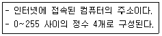
- 도메인 이름
- DNS
- LAN
- IP address
(정답률: 알수없음)
60. 컴퓨터 프로그램을 제어 프로그램과 서비스 프로그램으로 분류할 때 다음 중 제어 프로그램이 아닌 것은?
- 감시 프로그램
- 자료관리 프로그램
- 작업관리 프로그램
- 링키지 에디터 프로그램
(정답률: 알수없음)
4과목: 금속재료 및 용접일반
61. 본 용접에 있어서 다음 그림과 같은 용착법은?
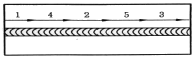
- 대칭법
- 후퇴법
- 전진법
- 스킵법
(정답률: 알수없음)
62. 플래시 용접법의 특징이 아닌 것은?
- 가열범위가 좁고 열영향부가 좁다.
- 용접면에 산화물의 개입이 적다.
- 용접면의 끝맺음 가공을 정확하게 할 필요가 없다.
- 용접시간이 길고 소비 전력이 많다.
(정답률: 알수없음)
63. 무부하 전압 80V, 아크 전압 30V, 아크 전류 300A 내부손실 4kW라 하면 이 때 효율은 몇 %인가?
- 69
- 54
- 90
- 80
(정답률: 알수없음)
64. 용접부를 X-ray 사진검사 방법으로 검사시 발견할 수 없는 용접 결함은?
- 기공
- 균열
- 잔류응력
- 슬래그 섞임
(정답률: 알수없음)
65. 피복 아크 용접에 관한 일반적인 특성 설명으로 올바른 것은?
- 피복 아크 용접에서 피복제의 주된 역할은 냉각속도를 빠르게 한다.
- 피복 아크 용접에서 직류 정극성은 역극성보다 비드 폭이 좁다.
- 탄산가스 아크 용접은 피복 아크 용접보다 용착 속도가 낮다.
- 직류 정극성은 (+)극에 용접봉을, (-)극에는 모재로 회로를 구성한다.
(정답률: 알수없음)
66. 탄산가스 아크 용접의 특징으로 틀린 것은?
- 피복 아크 용접에 비해 용입이 깊다.
- 슬래그 섞임이 발생하여 용접 후 처리가 어렵다.
- 피복 아크 용접에 비해 용접 속도가 빠르다.
- 비드 외관이 피복 아크 용접에 비해 약간 거칠다.
(정답률: 알수없음)
67. 용접부의 변형 교정법 중 열을 사용하지 아니하고 외력만으로서 소성변형이 일어나게 하는 것은?
- 형재(刑材)에 대한 직선 수축법
- 박판에 대한 점 수축법
- 피닝(peening)법
- 국부 풀림법
(정답률: 알수없음)
68. 텅스텐 아크 절단시 사용하는 극성으로 가장 적합한 것은?
- DCSP
- DCRP
- AC
- DC
(정답률: 알수없음)
69. 다음 KS 용접 도시기호 중 플러그나 슬롯 용접기호는?
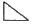
(정답률: 알수없음)
70. 심용접의 종류 중 심부의 겹침을 모재 두께 정도로 하여 겹쳐진 폭 전체를 가압하여 결합하는 방법은?
- 맞대기 심 용접
- 매시 심 용접
- 포일 심 용접
- 타전극 심 용접
(정답률: 알수없음)
71. Fe-C 상태도에서 공석점의 자유도는? (단, 압력은 대기압 으로 일정하다)
- 0
- 1
- 2
- 3
(정답률: 알수없음)
72. 변현 전과 후의 위치가 면을 경계로 하여 대칭이 되는 것과 같은 변형은?
- 슬립변형
- 탄성변형
- 연성변형
- 쌍정변형
(정답률: 알수없음)
73. 정련된 용강을 레들 중에서 Fe-Mn, Fe-Si, A1 등으로 완전 탈산시킨 강괴는?
- 킬드강
- 림드강
- 세미킬드강
- 캡드강
(정답률: 알수없음)
74. 쾌삭강(free cutting steel)의 피삭성(被削性)을 향상시키는 원소가 아닌 것은?
- Pb
- S
- Ca
- Mn
(정답률: 알수없음)
75. 금속은 일정한 온도에서 전기저항이 0이 되는 현상을 나타낸다. 이 상태를 무엇이라고 하는가?
- 전도율
- 비정질
- 전기전도
- 초전도
(정답률: 알수없음)
76. 금속은 변태점을 측정하는 방법에 해당되는 것은?
- 현미경 조직 검사법
- 침투탐상시험법
- 인장 시험법
- 열 분석법
(정답률: 알수없음)
77. 액체상태의 금속이 응고할 때 과냉각의 정도에 따라 생성되는 핵의 크기와 그 수로 옳은 것은?
- 과냉각의 정도가 클수록 생성되는 핵의 크기는 크고, 그 수는 감소한다.
- 과냉각의 정도가 클수록 생성되는 핵의 크기는 작고, 그 수는 증가한다.
- 과냉각의 정도가 클수록 생성되는 핵의 크기는 크고, 그 수는 증가한다.
- 과냉각의 정도가 클수록 생성되는 핵의 크기는 작고, 그 수는 감소한다.
(정답률: 알수없음)
78. 복합재료 소재 중 섬유 강화 금속은?
- GFRP
- CFRP
- FRM
- ACM
(정답률: 알수없음)
79. 니켈과 그 합금에 관한 설명으로 틀린 것은?
- 니켈은 비중이 약 8.9이고 백색이 나타낸다.
- 니켈은 도금용 소재로 사용된다.
- 니켈은 인성이 풍부한 금속이다.
- 36% Ni-Fe 합금은 퍼멀로이(perm-alloy)로서 열팽창계수가 크다.
(정답률: 알수없음)
80. 다음 중 분말야금법의 공정 순서로 옳은 것은?
- 원료분말제조→혼합→압축성형→예비소결→재압축→본소결
- 원료분말제조→본소결→예비소결→혼합→재압축→압축성형
- 압축성형→예비소결→원료분말제조→혼합→재압축→본소결
- 압축성형→원료분말제조→예비소결→본소결→재압축→혼합
(정답률: 알수없음)